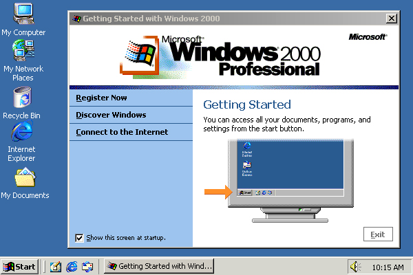
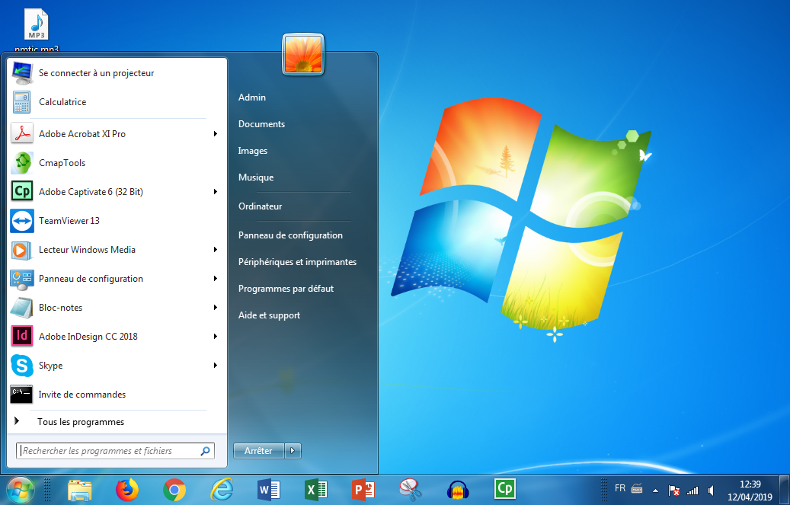

Windows est un système d'exploitation qui a été créé par Microsoft en 1985. Microsoft est une multinationale informatique et micro-informatique américaine, fondée en 1975 par Bill Gates et Paul Allen. Son activité principale consiste à développer et vendre des systèmes d’exploitation, des logiciels et des produits matériels dérivés. D’abord simple environnement graphique pour MS-DOS, Windows est devenu entre 1993 et 2001 un système d’exploitation à part entière.
Historique de Windows
Windows est un système d'exploitations ayant connus beaucoup de version au fils des années en voici les versions qui ont marquer l'informatique. Voici quelques versions les plus connues de windows:
Windows 95
Windows 98
Windows 2000
Windows XP
Windows Vista
Windows 7
Windows 8
Windows 10
Au sein de l'IUT nous utilisons windows 10 et Fedora comme systèmes d'exploitation.
Windows 95
Le développement de Windows 95 débute en mars 1992, peu de temps avant la sortie de Windows 3.1.
Du fait de la sortie de OS/2 2.0 par IBM, Microsoft réalise qu'une nouvelle version de Windows est nécessaire afin de prendre en charge les applications 32 bits et permettre un multitâche préemptif, tout en se devant de pouvoir tourner sur des machines peu puissantes. Initialement, Microsoft prévoyait de ne pas modifier l'environnement graphique et de sortir son OS fin 1993.
En mai 1994, Microsoft publie une toute première bêta de Windows Chicago qui prendra le nom quelques mois plus tard (en septembre) de Windows 95. En mars 1995, la bêta officielle de Windows 95 est publiée (1 million de licences OEM sont distribuées).
Windows 95 a connu plusieurs évolutions majeures, la plus importante est la version 4.00.1111 (OSR 2) son nom de code est Nashville. Cette version fut la plus importante car l'arrivée de MS-DOS 7.1 apporta de nombreuses nouveautés dont la plus importante qui est le support du FAT32 qui permettront dorénavant aux utilisateurs de créer des partitions pouvant atteindre 32 Go.
Interface:
Windows 98
Windows 98 (nom de code Memphis) est un système d'exploitation de la société Microsoft, successeur de Windows 95. Le produit s'est décliné en deux versions principales : la première sortie le 25 juin 19981 puis une mise à jour de la précédente dite "Second Edition", sortie le 23 avril 1999. Il fut suivi par Windows Millennium (ME) pour le grand public et par Windows 2000 pour les entreprises. Il constitue la seconde version de Windows 9x. Tout comme son prédécesseur, Windows 98 est bâti sur MS-DOS 7.1 et aura été la dernière version à prendre en charge le mode réel.
Le mode réel est le mode de fonctionnement par défaut des processeurs compatibles Intel x86. Il est aujourd'hui désuet car on lui préfère le mode protégé qui est plus robuste face aux erreurs matérielles et de programmation.
Interface:
Windows 2000
Windows 2000 est un système d'exploitation 32 bits développé et distribué par Microsoft sorti en février 2000. Le nom Windows 2000 (en abrégé : Win2000 ou Win2K ou encore W2K) est en fait le nom commercial de la version 5.0 de Windows NT. Elle est sortie le 17 février 2000 et a succédé à Windows NT 4.0, créé 4 ans auparavant en avril 1996.Une des plus grandes nouveautés est l'arrivée d'Active Directory, permettant à des machines utilisant les standards DNS, LDAP, et Kerberos de se connecter entre elles. Certains services de Windows 98 furent également incorporés au système, comme le gestionnaire de périphériques, Windows Media Player, et DirectX. Même si Windows 2000 n'était pas prévu pour des particuliers, la mise à jour depuis Windows 95 ou 98 était disponible.De plus une version modifié de Windows 2000, Neptune (NT 5.5), gestion du réseau 32 bits consistait à sortir une version familiale de Windows 2000, mais ce projet fut fusionné avec le projet Odyssey au profit de Whistler (nom de code de Windows XP).
Interface:

Windows XP
Windows XP, sorti le 25 août 2001, (nom de code « Whistler ») fusionne enfin les branches Windows NT/2000 et Windows 95/98/Me. Windows XP utilise le noyau NT 5.1, la branche Windows NT remplaçant la branche classique pour le grand public. La version originelle fut critiquée pour ses problèmes de compatibilité et de sécurité, ce qui amènera à la création de trois Service Packs par Microsoft au fil des années. Windows XP SP1 est sorti en septembre 2002, SP2 en août 2004 et SP3 en avril 2008. Ces services packs aidèrent grandement à d'adoption de Windows XP, devenant la version de Windows qui durera le plus longtemps du 25 octobre 2001 au 30 janvier 2007 quand il fut remplacé par Windows Vista.
Interface:
Windows Vista
Windows Vista est sorti 30 janvier 2007 il améliore grandement la sécurité grâce à son UAC (User Account Control), les utilisateurs ne sont plus par défaut connectés en tant qu'administrateur comme dans les versions précédentes de Windows. Des améliorations graphiques utilisant l'accélération 3D sont également disponibles avec l'interface graphique Windows Aero, de nouvelles applications sont également intégrées au système (Windows Calendar, Windows DVD Maker, Windows Mail ), Internet Explorer 7, Windows Media Player 11. Le numéro de version devient alors NT 6.0. À partir de cette version, toutes les éditions sont disponibles en 32 et 64 bits.
Interface:
Windows 7
Windows 7 est sorti le 22 octobre 2009. Il était précédemment connu sous les noms de code Blackcomb et Vienna. Windows 7 a pour numéro de version NT 6.1 (afin de garder une meilleure retrocompatibilité avec Windows Vista). Par rapport à Windows Vista, Windows 7 démarre plus vite, possède un nouveau shell : Windows PowerShell, une UAC améliorée et moins intrusive, le support du multi-touch, et une meilleure gestion des fenêtres10. La barre latérale de Vista disparait (même si les gadgets sont toujours disponibles) et plusieurs programmes inclus dans Windows Vista doivent maintenant être remplacés par leurs équivalents Windows Live à télécharger.
Interface:

Windows 8
Windows 8 est sorti en octobre 2012. Windows 8 introduit une nouvelle interface, basée sur celle de Windows Phone plus facile à utiliser en tactile. Cette interface remplace le menu démarrer par un écran démarrer en plein écran. D'autres nouveautés sont le support de l'USB 3.0, l'arrivée du Windows Store et un nouveau système de démarrage permettant de démarrer plus vite que Windows 7.Une mise à jour majeure de Windows 8 : Windows 8.1 est sorti le 17 octobre 2013. Cette version de Windows est la moin aimer de toutes.
Interface:
Windows 10
Windows 10 est la dernière version de Windows. Le menu Démarrer est de retour, celui-ci ayant disparu dans Windows 8. Cette nouvelle version apporte Cortana, un système de reconnaissance vocale qui permet d'envoyer des mails, rappeler des évènements inscrits dans l'agenda ... Windows 10 remplace Internet Explorer par Microsoft Edge, qui améliore la barre d'adresse, il est également possible de faire des annotations sur les pages Web. Cette version intègre le multitâche virtuel. Microsoft met à jour les fonctionnalités de Windows 10 régulièrement ; plusieurs mises à niveau ont été déployées par le biais de Windows Update (mises à jour de fonctionnalités) .
Interface:
Fedora
Fedora est un système d’exploitation libre et une distribution GNU/Linux communautaire développée par le projet Fedora et sponsorisée par l’entreprise Red Hat, qui lui fournit des développeurs ainsi que des moyens financiers et logistiques. Fedora est prompte à inclure des nouveautés et peut être considérée comme une vitrine technologique pour le monde du logiciel libre, auquel elle contribue largement via les projets amont tels que le noyau Linux, GNOME, NetworkManager, PackageKit, PulseAudio, Wayland, la célèbre suite de compilateurs GCC et bien d’autres. Tous les six mois une nouvelle version sort ; elle est maintenue treize mois.
Fedora est orientée pour les développeurs et a la réputation d’être à la pointe de l’innovation. Elle intègre rapidement les nouvelles technologies et travaille en étroite collaboration avec les communautés du logiciel libre.Fedora a un cycle de vie relativement court : 13 mois. Cela met en avant les logiciels de pointe, car les développeurs sont libérés de la contrainte de compatibilité, mais cela fait de Fedora un mauvais choix en tant qu’environnement de production, qui requiert généralement une prise en charge sur le long terme.